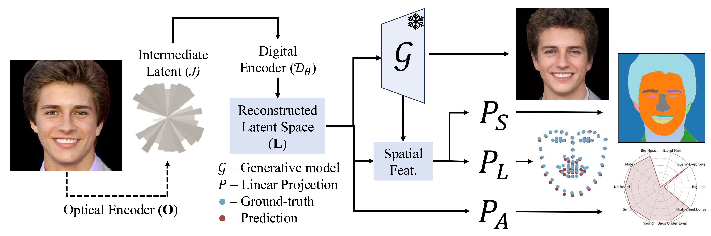

Latent Space Imaging
Matheus Souza, Yidan Zheng, Kaizhang Kang, Yogeshwar Nath Mishra, Qiang Fu, Wolfgang Heidrich
CVPR, 2025.

We propose an extremely-compressed imaging paradigm called Latent Space Imaging (LSI). The optical encoder (O) projects the real signal into a compressed set of measurements. A digital encoder (D) then maps this signal to the latent space (L) of a frozen generative model (G), enabling image reconstruction. The L can also be linearly projected (P) to perform downstream tasks directly—such as facial segmentation (PS), landmark detection (PL), and attribute classification (PA)—without requiring image reconstruction or a complex new model.
Abstract
Digital imaging systems have traditionally relied on brute-force measurement and processing of pixels arranged on regular grids. In contrast, the human visual system performs significant data reduction from the large number of photoreceptors to the optic nerve, effectively encoding visual information into a low-bandwidth latent space representation optimized for brain processing. Inspired by this, we propose a similar approach to advance artificial vision systems.
Latent Space Imaging introduces a new paradigm that combines optics and software to encode image information directly into the semantically rich latent space of a generative model. This approach substantially reduces bandwidth and memory demands during image capture and enables a range of downstream tasks focused on the latent space.
We validate this principle through an initial hardware prototype based on a single-pixel camera. By implementing an amplitude modulation scheme that encodes into the generative model's latent space, we achieve compression ratios ranging from 1:100 to 1:1000 during imaging, and up to 1:16384 for downstream applications. This approach leverages the model's intrinsic linear boundaries, demonstrating the potential of latent space imaging for highly efficient imaging hardware, adaptable future applications in high-speed imaging, and task-specific cameras with significantly reduced hardware complexity.
Paper
Paper [Souza2025LSI.pdf]
Supplementary [Souza2025LSI_supp.pdf]
Code [https://github.com/vccimaging/latent-imaging]